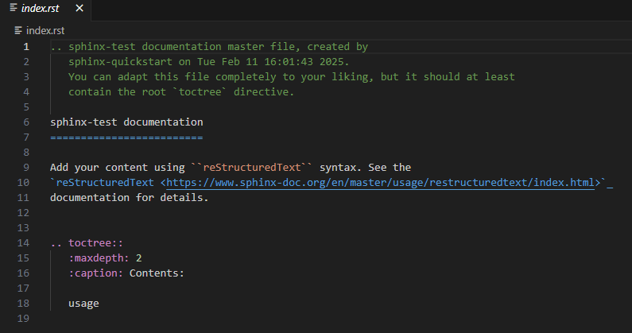

GitHub Pages with Sphinx
Author: Jon Elsey
N.B. - this guide is WIP and there are few TODOs sprinkled throughout which I need to finish up… but even in its current form should be enough to start out with!
Using Sphinx (in conjunction with GitHub Pages) is a great way to get documentation up for a project, in a way that is (relatively) easy to maintain. In this example, I will demonstrate the use of Sphinx to create a documentation website and create an automatic API reference from your code in a few short steps.
What is Sphinx?
Sphinx is a tool designed to let you generate documentation quickly and easily.
Sphinx supports reStructured Text and Markdown source files (i.e. the format of the pages you want to display on the website). It then takes these files, and alongside a (usually quite small) configuration script, turns these into HTML that can be deployed on the web. It is customisable, with many different templates available. The one you have likely seen in a lot of places is the ReadTheDocs template.
An example from my work is the website I created for monarchs - a model of ice shelf development written in Python.
Rather than writing a big PDF guide and hosting it somewhere, I took my existing notes (which were OneNote or Markdown files), did a little tidying up and organisation, stuck them in a folder and let Sphinx deploy it for me.
Another example is this very page - the CEMAC Github.io website was entirely generated using Sphinx.
My hope here is to reduce your overhead in learning how to use Sphinx, and give you the tools/confidence to create something reasonably good quite quickly!
Let’s jump in
Let’s create a new project, and make it a public GitHub repository (so that we can later deploy it using Github Pages).
In an new virtual environment (or an existing project environment), do
python -m pip install sphinx
Next step - create a directory called docs, cd to it, and run sphinx-quickstart.
(you can skip the creation of the
docsfolder, but Sphinx will then create directories in your project root directory which you may not want e.g. if you are adding docs to an existing project)On Windows, Leeds IT admin, in their infinite wisdom, don’t let you run this. Instead, you can do
python -m sphinx.cmd.quickstartto achieve the same thing.
This will ask you some questions. The one that is not obvious how to answer is the first one. I recommend entering y.

This will separate the source and build directories, i.e. Sphinx will keep your reST/Markdown source files in one place, then build the finished files in another.
Depending on your answers, this does the following steps:
Creates
/buildand/sourcefoldersCreates
conf.py, which is the main configuration file used by Sphinx.Within this will be the
author,project_nameandreleasethat you specified in your answers.
Creates
index.rst, which will be the landing page of your project.index.rstcontains what is known as a “toctree”, where “toc” is shorthand for Table of Contents.
There is a lot of documentation on the toctree - most of the time you will just use this to link to other pages you have created. You can do this by adding the name of the document without the file extension.
Let’s try this now. We will create a file called usage.rst and add it to the source directory. We will keep the file simple - a header and some text.
We can also use Markdown, but for now let’s use reST, since Markdown support requires an extension (which will be covered later).
We will then add usage to our toctree like so:

If you ran sphinx-quickstart, you may have noticed that it placed a couple of extra files in your folder. One of these is a batch file, make.bat. This file is nice, because it lets us do this. From the docs folder, do
make html
And voila, Sphinx has built us a website! This workflow is the fundamental building block of Sphinx. We can view our website by looking at the generated .html files in /build.
This is fine, but lacks a little something. What we really want to do, to make our project stand out, is make it look like every other documentation website. We can do this via a template. We add this by the following steps:
Install or create our template. Many of these templates are
pipinstallable. Find one you like using Google. I tend to use the Read the Docs theme, since it is nice and clear, and since it is used by many other projects, easy for users to navigate. Let’s try installing this now, via:-
python -m pip install sphinx-rtd-themeWe also need to tell our Sphinx config file to use this theme. Look at
conf.py. You should notice the following line at the bottom:html_theme='alabaster'Change'alabaster'to'sphinx_rtd_theme'(note the use of underscores not hyphens!)
Now rebuild the documentation with make html (remember to be in the folder with make.bat !) and you should see that it uses our nice new theme.
#TODO-CEMAC - add images stuff here, refer to html_static_path here since it the next line in conf.py
#TODO-CEMAC - cross-referencing
Extensions
myst-parser
reStructured Text is fine, but personally, I much prefer to use Markdown. Sphinx doesn’t support Markdown out of the box, but we can add it using an extension. These, like the templates from earlier, are very often pip installable. To allow us to use Markdown, let’s install the myst-parser extension.
python -m pip install myst-parser
Now, we add myst-parser as an extension in conf.py. To do this, add the line:
extensions = ['myst_parser']
Now let’s create a sample Markdown file, and test it out!
#TODO-CEMAC - finish the above and test
AutoAPI
autoapi is incredibly useful since you can turn your code documentation into website content (so it can be referenced easily). This has advantages -
- Documentation exists in one place. Keep your code documentation updated, no need to duplicate effort.
- Encourages proper documentation practices for code you write!
Let’s try this out!
Napoleon
napoleon is highly recommended if (like me) you like to use NumPy style docstrings, and are using AutoAPI (or one of the many similar tools like autodoc or autosummary) since Sphinx by default doesn’t like these.
Deploying with Github Pages
N.B. - this may be stuff that the CEMAC team already know, but may be useful to provide an illustrative example. N.B. 2 - other hosting services are available! If your project ends up supporting multiple releases, each with different documentation, then something like Read The Docs (from which we have nicked their template!) may be more suitable. (although the free tier comes with ads, eww)
Now that we have our
.htmlfiles, we have all of the content we need for our website. The next step is to deploy it. I recommend using GitHub Actions to do this. This allows for automatic deployment of your documentation, based on a trigger that you set.For example, for
monarchs, I have set it up so that documentation is rebuilt whenever a commit or pull request is made tomain.
The script I use for this is available on the
monarchsrepo - let’s channel Neil Buchanan (”here’s one I made earlier!”) and “adapt” this now for our little project.

You may have noticed the scare quotes around “adapt” - since with the folder formatting we have adopted, we can use this script to deploy on Github Pages with precisely zero changes! We add this to a new folder we will create now in the project root folder, ‘
github/workflows.Then, push this to GitHub. On the repository GitHub page, navigate to
Settingsand thenPages.When this is pushed, and when any subsequent pushes or pull requests are made to
main, the script will call the commands we used above using a runner, and push the resulting files to a new branch,gh-pages.
Find
Sourceand from there select “Deploy from a branch”. - In theBranchsection choosegh-pagesand/rootin the dropdown menus and clickSave.If everything was done correctly - we can now check our website! Navigate to
https://<repo_owner_name>.github.io/<repository_name>
#TODO-CEMAC - finish this up
The takeaway from this I hope is that Sphinx is a really useful tool which allows you to fit your work to a standard template, and produce reasonably high quality documentation pages with relatively little effort.
tl;dr
Download Sphinx
Run
sphinx-quickstartWrite some documentation files
Build with
make html(optional) Use a non-default template to make your project stand out/look nice
Use extensions to make Sphinx do other cool stuff
Deploy automatically with Github Pages
Extras
There is a lot of documentation about stuff you can do with Sphinx. Most of it is, in my opinion, in excessive detail. Any little tips and tricks that I have actually used will be added here.
Of course, being software developers, if there is something that we want to do and don’t know how, chances are someone else has already done it and StackOverflow has the answer. Sphinx is no different!
You can pass other argument types to
make. For example, you can domake latexpdfto invoke LaTeX and create .pdf files.You can nest documentation in folders, e.g. instead of creating a file
usageinsource, you could place the reST file indirand adddir1/usageinto theindex.rsttoctree.The
maxdepthyou can see in thetoctreerefers to the degree of nesting that the index page will display for you - it is initialised to 2 by default. For example, if you have a Markdown file with a top header (i.e. a header with one#) called ‘Introduction’, and two sub-headers (two#es) ‘Foo’ and ‘Bar’, then with:maxdepth: 1the table of contents will just say ‘Introduction’, with:maxdepth: 2it will show Introduction, then nested within this it will contain ‘Foo’ and ‘Bar’, etc.
An example how how you might want to use this is if you were creating a website for some training material, you could organise them by “module” or by lecture into different folders.
Other extensions
Sphinx has support for a number of other extensions. The ones I use are covered here.
doctest -
duration - Displays information about how e.g. how long it takes for your documentation to build.
#TODO-CEMAC - video extension, see LFRic Sphinx docs page for an example
#TODO-CEMAC - Support for images inside reST files, best practices (including a _static folder for example)
#TODO-CEMAC - Sphinx-fortran! In active development